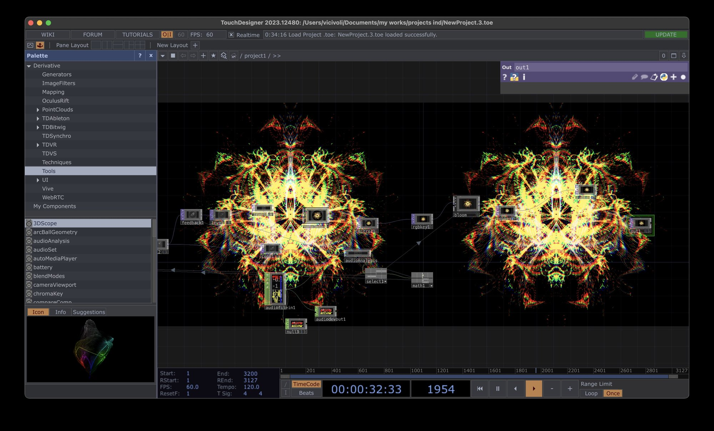

Film 2025
Falling in Love (Visualizer)
The rhythm of falling in love, visualized.
Overview
The rhythm of falling in love, visualized.
“Falling in Love” is a hypnotic visualizer built around the pulse of emotion. Patterns flicker and recombine like a heartbeat learning its rhythm, pulling the viewer into the shifting, electric space of early love.
Process
I started from the beat.
The music came first. I built the piece in TouchDesigner and let the track drive it: an audio analysis of the song feeds a chain of feedback, mirroring, colour keying and bloom, so every hit of the beat pushes the pattern into a new shape.
Somewhere in that motion the shapes start to look like something: a flower, a face, a heart. I never decide what. I think that’s where the art is, in the small details, where the person watching brings their own meaning to it.
